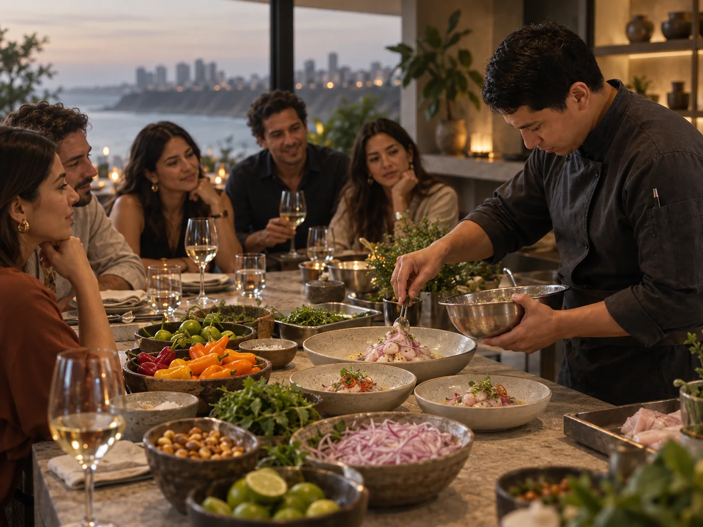
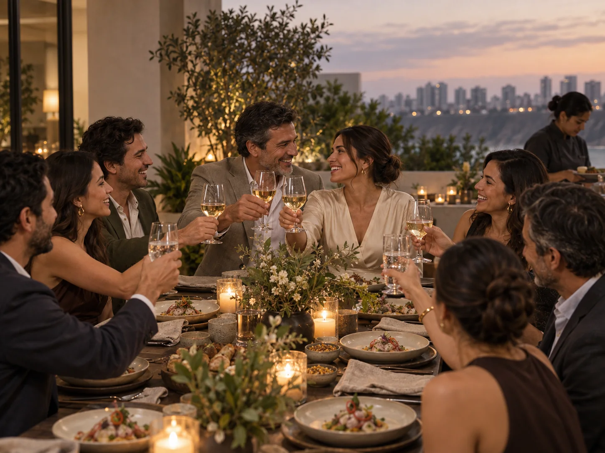
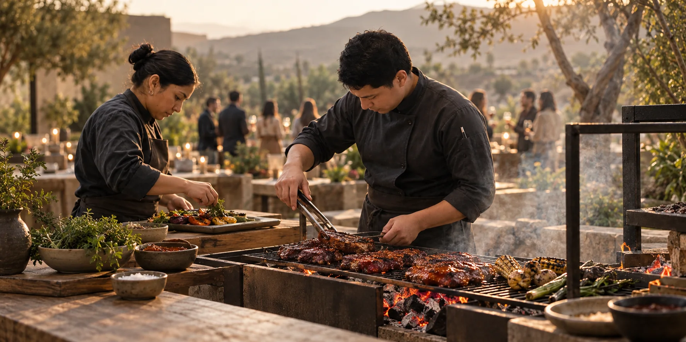
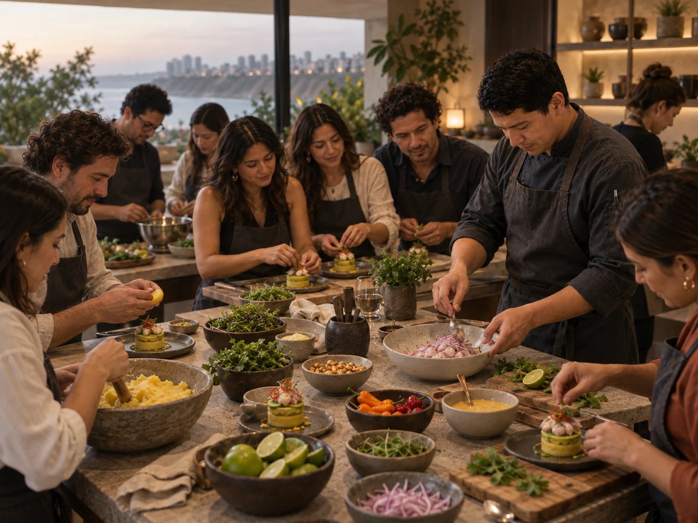
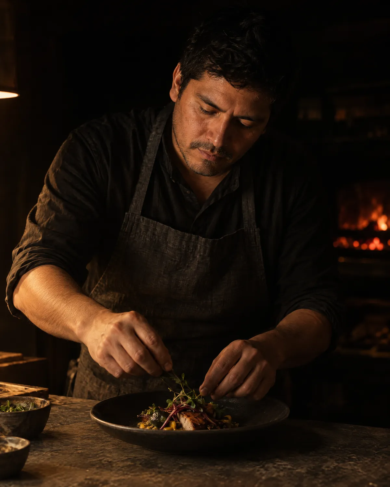
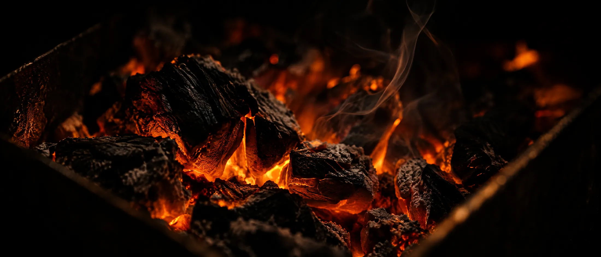
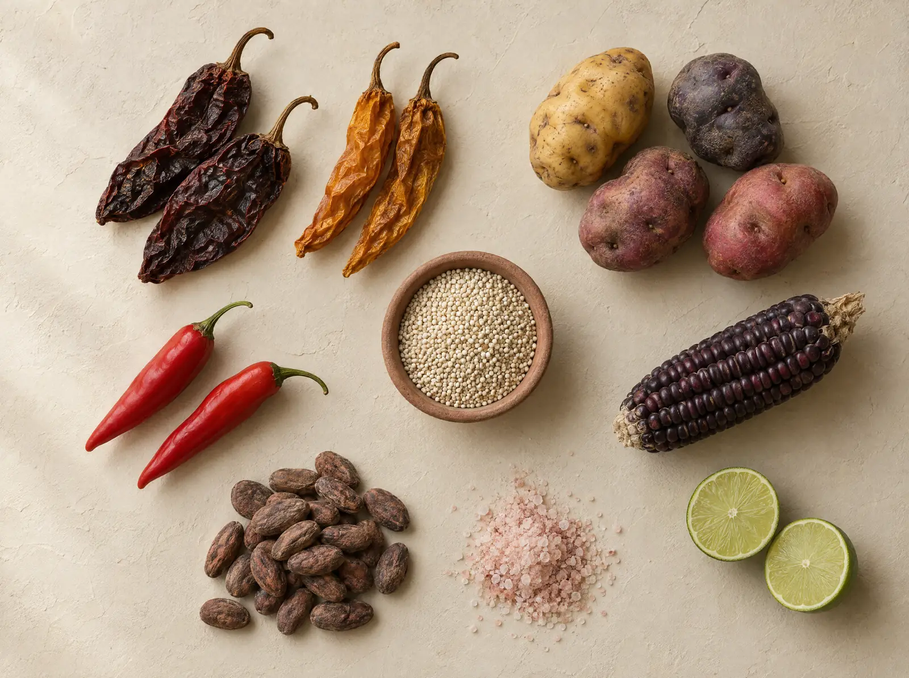

Cena privada
Cena en casa, seis sillas
Secuencia de seis pasos servida desde tu propia cocina. Entramos, cocinamos, servimos y devolvemos el espacio como estaba.
6–12 invitados · 3 h


Chef privado & catering · Lima
Diseñamos la noche completa —menú, servicio y ritmo— alrededor de tu casa, tu cocina y tus invitados. Del primer pase al último plato, todo llega decidido.
Ceviche de pesca del día · cena privada en Barranco
Seis formas de reunirse
Primero entendemos la mesa: quiénes vienen, cuánto tiempo tienen y cómo quieres que se recuerde la noche. El formato viene después.





Quién cocina
Empecé en el norte, aprendí el mar en Lima y el fuego en el valle. Brasa & Sal nació para llevar ese oficio a mesas pequeñas, donde el cocinero saluda y el plato sale caliente sin pasar por un salón de eventos.

Menú de muestra · 6 pasos
Este recorrido muestra el tono de una noche Brasa & Sal. El menú real se escribe con tu mesa y con lo que el mercado tenga esa semana.

Insumos y productores
Trabajamos con pocos proveedores y los nombramos. Si un producto no llega en su punto, cambia el plato, no el estándar.
Mercado de Surquillo, compra de temporada.
Noches servidas
Toca cualquier pieza para verla en grande y recorrer los detalles de cada servicio.
Detrás de cada plato
Una buena receta no sostiene un evento. Lo sostienen decisiones visibles antes, durante y después del último pase.
Menú, personal, equipamiento y tiempos quedan por escrito antes de confirmar la fecha.
Cada plato se adapta a la cocina real del lugar: distancia, pase y capacidad de frío o calor.
Un responsable de sala marca el ritmo. La mesa recibe una experiencia continua, no tareas sueltas.
Orden, retiro de merma y devolución del espacio forman parte del último pase.
Rigor sanitario. En una operación real, la documentación y las buenas prácticas se acreditan según la actividad y la municipalidad. Esta demo no afirma contar con certificados. Referencia: Norma Sanitaria del MINSA.
Rangos orientativos
Mueve el número de invitados y elige el formato: el rango se ajusta solo. El número final depende del menú, el personal, el equipamiento y el lugar.
A esa escala: recepción de pie y cena sentada, con equipo de sala.
Rango por invitado
S/ 150 – 260
Total referencial S/ 2,700 – 4,680
Montos referenciales de demostración en soles, sin IGV ni traslados. No constituyen cotización.
Formato íntimo
S/ 220 – 340
por invitado
Seis pasos, chef en casa y un asistente de sala.
Formato celebración
S/ 150 – 260
por invitado
Recepción, cena y cierre con equipo completo de sala.
Formato equipo
S/ 95 – 180
por persona
Almuerzos y talleres con horario cerrado y factura.
Disponibilidad
Elige un día y lo llevamos al formulario. La disponibilidad mostrada es ilustrativa: en producción se conecta al calendario real del negocio.
Libre Últimos cupos Tomado
Cobertura
Han hablado de nosotros
logo medio 01
“Un formato que devuelve la cocina peruana a la mesa de casa, sin escenografía de evento.”Revista gastronómica · 2025
logo medio 02
“La operación se nota: nadie en la sala percibe el trabajo que hay detrás del pase.”Suplemento de fin de semana · 2025
logo medio 03
“Producto peruano tratado con respeto y sin exhibicionismo.”Podcast de cocina · 2026
logo medio 04
“Cocina de autor que cabe en un departamento de Miraflores.”Guía de ciudad · 2026
De la idea a la mesa
Sin paquetes rígidos. Cada paso quita incertidumbre y acerca la propuesta a lo que de verdad necesitas.
Fecha, lugar, invitados, horarios, estilo de servicio y expectativas.
Menú conceptual, alcance operativo y variables que mueven el presupuesto.
Restricciones, acceso, equipamiento, secuencia y responsables quedan claros.
Producción, montaje, pase y cierre siguen el plan acordado.
Lo que suele preguntarse
Para cenas pequeñas, dos o tres semanas suelen alcanzar. Para celebraciones de más de 40 invitados, entre cuatro y seis semanas permiten asegurar equipo y producto sin recargos de urgencia.
Sí, siempre antes de diseñar el menú. La capacidad real de adaptación depende del tipo de restricción, del entorno de producción y del riesgo de contaminación cruzada, y se conversa caso por caso.
Un mesón libre, agua, dos tomas eléctricas y acceso para cargar. Si falta algo, llevamos equipamiento propio y lo indicamos en la propuesta con su costo.
No por defecto. En eventos grandes se puede agendar una degustación previa con costo independiente, que se descuenta si el evento se confirma.
Configura tu noche
Ocasión, invitados, formato y fecha. Con eso preparamos una conversación útil en vez de un catálogo genérico.
Paso 1 de 4
Formato íntimo: servicio en mesa, seis pasos.
Demo sin envío real: el número de WhatsApp es un ejemplo y debe reemplazarse por el del negocio.